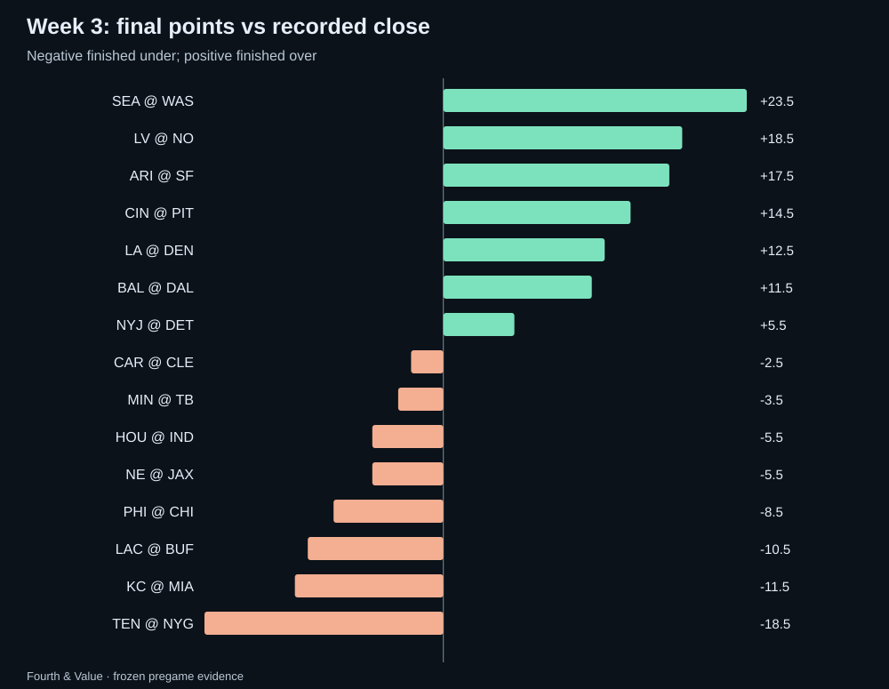
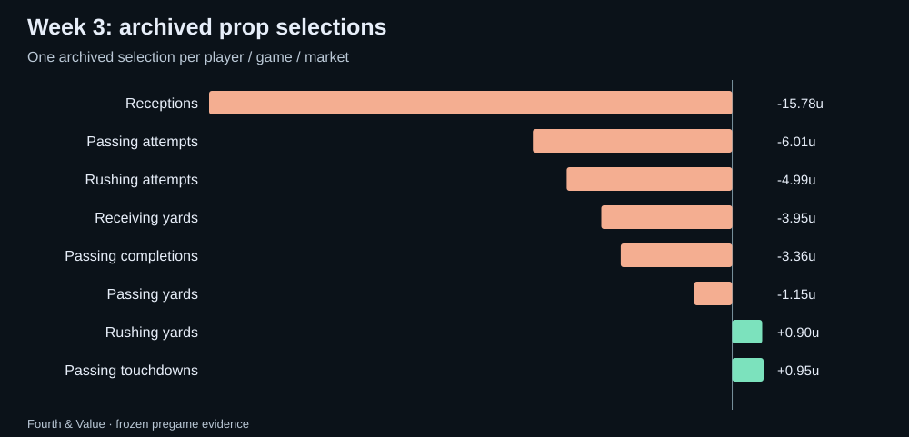
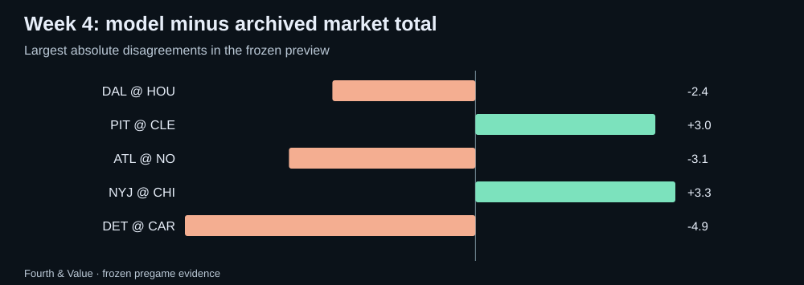

Fourth & Value · Weekly market review
NFL Week 3 review: the model receipts and the Week 4 watchlist
An audited Week 3 scorecard using frozen pregame data, plus Fourth & Value model-market disagreements to research for Week 4.
Week 3: the market scoreboard
Recorded closes produced 7 overs, 8 unders and 0 pushes. Against our archived market median, 7 games finished over, 8 under and 0 pushed. Not graded: ATL @ GB, which kicked off before the Week 3 pregame archive was frozen.
The raw totals model direction went 5–10 with 0 pushes and -5.38u across 15 games with archived same-line prices; 0 unpriced directions are excluded from profit/loss. Mean absolute error was 12.20 points for the model versus 11.40 for the archived market median and 11.30 for the recorded close.

The model scorecard
The deduplicated published shortlist contained 264 selections; 258 were conservatively graded and 6 remain unresolved. The graded set went 108–150 with 0 pushes for -33.40u, or -12.9% on units risked. Missing participation or missing statistics remain unresolved rather than becoming automatic unders.
| Market | W–L | Net units | Unresolved |
|---|---|---|---|
| Passing touchdowns | 11–15 | +0.95u | 0 |
| Rushing yards | 18–16 | +0.90u | 1 |
| Passing yards | 1–3 | -1.15u | 0 |
| Passing completions | 6–9 | -3.36u | 0 |
| Receiving yards | 1–5 | -3.95u | 0 |
| Rushing attempts | 10–15 | -4.99u | 0 |
| Passing attempts | 9–14 | -6.01u | 0 |
| Receptions | 52–73 | -15.78u | 5 |

Probability quality, not just profit
Across 544 representative non-push outcomes with both probabilities available, the model Brier score was 0.2554 versus 0.2512 for the de-vigged consensus. The game-block 95% interval for model minus market Brier was -0.0014 to +0.0104.
A positive one-week return and a better probability score are different claims. This report keeps both because a profitable slate can still expose probability weaknesses, and vice versa.
Week 4: disagreement is a research question
The new weekly refresh is frozen before the first kickoff. The largest raw totals disagreements are:
- DET @ CAR: model 46.1 vs archived median 51.0 (-4.9). This is a research gap, not a calibrated edge.
- NYJ @ CHI: model 46.3 vs archived median 43.0 (+3.3). This is a research gap, not a calibrated edge.
- ATL @ NO: model 44.4 vs archived median 47.5 (-3.1). This is a research gap, not a calibrated edge.
- PIT @ CLE: model 41.5 vs archived median 38.5 (+3.0). This is a research gap, not a calibrated edge.
- DAL @ HOU: model 45.6 vs archived median 48.0 (-2.4). This is a research gap, not a calibrated edge.

Player props to recheck
- Braelon Allen Rushing yards under 55.5 at fanduel (-114); saved model mean 20.79, model probability 98.0%, estimated EV +84.0%. Calibration fitted; not prospectively validated
- Justin Herbert Passing touchdowns under 0.5 at draftkings (+201); saved model mean 0.94, model probability 50.0%, estimated EV +50.5%. Calibration fitted; not prospectively validated
- Jalen Hurts Passing touchdowns over 1.5 at draftkings (+192); saved model mean 1.77, model probability 50.0%, estimated EV +46.0%. Calibration fitted; not prospectively validated
- Jalon Daniels Passing touchdowns under 0.5 at draftkings (+158); saved model mean 0.01, model probability 55.8%, estimated EV +43.9%. Calibration fitted; not prospectively validated
- Noah Fant Receptions over 2.5 at betrivers (+150); saved model mean 3.15, model probability 54.8%, estimated EV +36.9%. Calibration fitted; not prospectively validated
These are saved prices from the weekly archive. Recheck the current line, price, injury status and role before treating any one of them as actionable. Model status labels are shown rather than hidden.
Audit notes
The scorecard uses hash-verified immutable weekly pregame archives.
The completed-week scorecard uses only the frozen pregame archive for Week 3 and official results/player statistics available after the games. The preview uses a separate frozen Week 4 archive. The workflow refuses to create a new archive after a game has started, refuses to overwrite an existing archive whose hashes do not match, and refuses to publish a review while any official Week 3 game remains unplayed.